Södermalm i tid och rum. Stockholm
Ur Se på Söder, Olle Rydberg, 1986Vävarnas vrånga värld
Husen närmast Barnängens huvudbyggnad från 1769 är alla från 1700-talet. Längan väster om byggdesvisserligen i en första version redan 1691 och av trä, men ombyggdes och påbyggdes av sten efter en eldsvåda1741. Östra huset hyste i många decennier Liljeholmens Vinfabriks AB - senare Liljeholmens Ättiksfabrik.Den startade vid 1800-talets mitt vid Liljeholmen och kom 1861 till Barnängen, där fabrikationen till en början drevs i en annanbyggnad på området.
Öster om den gamla Barnängsanläggningen låg en fabriksbyggnad frånindustrialismens glansdagar. Här hade Stockholms Bomullsspinneri och Väfveri AB sin tillverkning frånår 1870, utrustat med modern engelsk maskinpark.Anläggningen är nu helt utraderad. Kvar står det nedlagda spinneriets trevåningsbyggnad från 1916, som ritadesav Årstabrons arkitekt, Cyrillus Johansson. Industridesign av hans hand ser vi här och var i stadens halvgamla fabrikskvarter. Tiden-Barnängens tryckeri/bokbinderi i KF:s regi är numera inrymt ispinneriet.
Tekniskt intressant är att väveriet redan 1887 övergick från gas- till elbelysning och 1890 lät montera innågonting så tekniskt modernt som sprinklers i taket för brandförsvaret, en åtgärd som verkadehundraprocentigt redan vid ett första eldsvådetillbud fyra år senare. Brandkåren behövde inte ingripa.
|
Stockholms stad köpte redan år 1904 två fjärdedelar av Barnängsområdet, huvudsakligen obebyggd mark inorr och väster, inklusive planerade gatustråk. När bomullsspinneriet upphörde övertog staden resten avfastigheten. Vid försäljningen åberopades Danvikens hospitals uppgörelse med Jacob Gavelius år 1698 omdess rätt att "vid tomternas försäljning var 30:de penning och en halv procent av köpeskillingen skulle tillDanviken inbetalas". Saken ledde till en process som slutade med seger för Danvikens hospital. En anmärkningsvärd förändring av Barnängsmiljön skedde vid Hammarbysjöns sänkning på 1920-talet. Dåförsvann den omedelbara kontakten med vattnet. Sjön nådde förut ända fram till trädgårdsterrassens kant. Nu är alltsammans inringat av asfalt och grå betong i gator och kajer. De olika lokaliteterna är uppdelade på skilda verksamheter. | 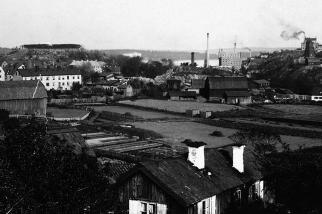  |
Karaktäristiskt för äldre fastigheter från ved- och kolåldern är det överflöd av skorstenar som belamrar taken.Lustig är den anhopning av svarta plåtrör, som nyfiket sticker upp ur en skorsten på nocken av den gamlaättiksfabrikens hus. Nakna, utan skyddande förklädnad kurar de ihop sig, tätt tryckta till varandra som för attvärja sig mot snålblåsten från sjön.
Upptakten till Barnängens manufakturverksamhet hänger samman med Karl XI:s reformverksamhet inomhären på 1680-talet. Allmän genomföring av rotar och ständiga knektehållet gynnade textilindustrin. Det syddesuniformer för fullt. En till Stockholm inflyttad jönköpingsbo, Jacob Gavelius ägnade sig först åt textilimport istor skala med huvudsaklig försäljning av kläde till armén. När kronan 1686 beslöt att endast använda svensktkläde tvingades Gavelius att bli producent, såvida han ville fortsätta att sälja till armén.Klädestillverkaren Daniel Leijonancker dog ganska lägligt 1688, vilket gav Gavelius chansen attöverta hans inarbetade, men skuldsatta fabrik (Malongen) vid Nytorget. Några år senare förbereddes klädestillverkningen på Barnängen genom uppbyggnad av den tidigare nämnda fabrikslängan av trä.
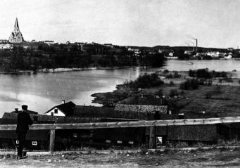  Från Skanstull mot nordost. 1907 Från Skanstull mot nordost. 1907 |
Av kronan fick Gavelius rättighet att leverera kläde till regementen i Sverige och Finland, order som ocksågynnade grannen, färgarmästaren, sedermera också klädesvävaren Hans Wessman, på vars tomt Färgaregårdenanlades. Gavelius hade många järn i elden. Han var bland annat engagerad i södra varvet vid Tegelviken, menförsökte sig också på sådant som att utvinna salt ur havet. På Åland anlade han ett saltsjuderi till vilket skotskaexperter knöts. Det fick tyvärr kort livslängd trots statligt stöd. Gavelius pionjärtid i Barnängsindustrins historia är tämligen kort. Dåvarande byggnader på tomten vidHammarbysjön hade inte stått många år förrän byggherren avled i slutet av 1698, året efter Karl XI:s död. Påtronen satt då den 16-årige Karl XII. Gavelius hade adlats i början av året, som erkänsla för de tjänster hangjort kronan. Den tid han hade kvar att leva kunde han kalla sig Lagerstedt, om han nu tyckte att det lät finareän hans gamla namn. |
Lagerstedt bodde privat vid Riddarhustorget och disponerade som sommarnöje under sina sistalevnadsår Farsta gård vid Magelungen. Gården ägdes på den tiden av släkten Gyllenstierna på Älvsjö.Men Lagerstedt anses vara byggherre till Farsta gårds huvudbyggnad som vi idag ser. Änkan ärvdealltsammans och gifte snart om sig med hovrättsrådet Georg Stiernhoff.
Under 1700-talets början var arméns klädbehov särskilt stort med anledning av Karl XII:s krigsengagemang mot ryssarna. Ingen behövde vara arbetslös på Barnängen. Konsten var emellertid att få betalt av kronan.Textilfabriken leddes nu av Lagerstedts måg, Hans Ekman, vilken bodde i den huvudbyggnad som dåfanns på platsen. Den låg öster om detsenare byggda corps-de-logiet, det som nu står på plats. På Ekmans tid fanns också ett elegant inrett lusthus, fullt jämförbart med det annex till Svindersvik, som hovmarskalkinnan, friherinnan Catharina Charlotta De Geer lät uppföra under Gustav III:s tid.
| Kronans klädesbehov minskade efter krigarkungens död. Vikande konjunkturer men också konkurrensfrån andra vävare och då särskilt Adam Pinckhardt, vars kläde hade finare struktur än Barnängens, bidrog tillatt företaget in på 1700-talet hamnade på fallrepet.1724 övertog Ridderskapet och adeln med omkring tjugo intressenter tre fjärdedelar av ägarskapet tillBarnängen och drev det vidare. 1731 var Hans Ekmans tid vid Barnängen ute (han dog 1743, 77 år gammal) och Erik Salander tillträddeposten som företagets chef. Samma år fick firman bidrag från Allmänna landshjälpen som stöttat textilföretagi Alingsås och bland annat också kattuntryckeriet vid Stora Sickla, tvärs över Hammarbysjön. | 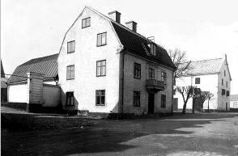 |
Erik Salander styrde fabriken med fältherrehand och betraktade arbetarna som manskap i en merkantilismens manufakturarmé. Hans åsikter och företagareprinciper, som han delgav i en skrift, var märkligaför att inte säga chockerande även för hans samtida. Långa arbetsdagar och svältlöner var enligt honom ettframgångsrikt medel att hålla de anställda på mattan och få dem att slita för brödfödan. Barn skulle inteskämmas bort på barnhus, utan redan vid fem-sexårsåldern sättas i arbete inom fabriken. Arbetare betraktadehan som en lägre människoras.
Barnängen arrenderade klädesvalkar vid Nacka ström, som före ångkraftens genombrott med sina fall varstockholmstraktens största kraftkälla för industriverksamhet. Ett klent alternativ till kvarnhjulen varhästvandringar, som fanns lite varstans där det behövdes större tag än handkraft. En hästvandring fanns under1700-talet också på Barnängen, vid stranden av Hammarbysjön.
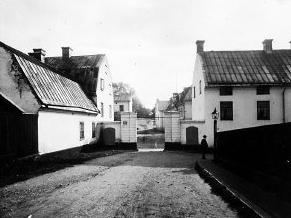 |
Försäljning av Barnängens produkter försiggick i handelsman Wieses hus vid Stortorget och i Stockholms Hallmagasin.Under Salanders tid var flera utländska, framförallt tyska mästare anställda i väverierna på Barnängen, såsomtysken Christian Madelon, han som stod för stoffväveriet vid Nytorget. Det är efter honom som fabriksbyggnaden kom att kallas Malongen, en förvrängning av hans rätta namn. Bådeholländare och polacker stod då i Madelons tjänst. På kontoret vid Barnängen satt vid sin pulpet kassörenHans Reinhold Apiarie och plitade siffror med gåspenna. Namnet skulle komma i rampljuset lite längre fram i tiden. Som medlem av generaltullarrendesocieteten och tillhörande Stadens äldste blev han imognare år en högst ärad och aktad man. |
Intressenterna Ridderskapet och adeln lämnade 1742 stoffabriken vid Nytorget på fem års arrende tillMadelon. Under fjorton år som anställd i manufakturiet hade han gjort sig väl förfaren med fabrikationen.Anläggningen vid Barnängen övergick några år senare i Salanders och handlaren Nils Wahlbergs händeroch ett kontrakt på tio år upprättades dem emellan. Efter diverse turer mellan Salander, Wahlberg ochkassören Apiarie kom Salander och Apiarie vid 1700-talets mitt att samarbeta sedan Wahlberg utträtt.
I samma veva som Madelon 1755 fick sitt kontrakt på stoffabriken förlängt, klagade han på den osundamiljön vid Nytorget. Där låg en plankomgärdad uppsamlingsplats för latrin, som spred osund lukt ochvimlade av flugor. Några år senare, efter 30 års tjänst, befriades han från sina uppdrag och arrendet överlätspå hovfabrikören Fredrik Nettelbladt.
När Salander omsider drog sig tillbaka slog Hans Apiarie sig samman med brodern Carl Gustaf, underfirmanamnet Hans & Carl Apiarie. I början av 1760-talet inköpte brödraparet Barnängen och stoffabrikenfrån Riddarhuset och adeln. De gynnades av statliga räntefria lån ur manufakturfonden. V känner igensubventionssystemet i våra dagars industripolitik. Svenska textilbranschen har ofta mer eller mindre gått påkryckor. Barnängen var långt ifrån det enda bomullsväveriet i Stockholm. 1760 hade man 34 andra liknandeetablissemang att konkurrera med. Alla vävstolar sköttes på den tiden med hand- och fotkraft, fjärran frånånga och elektricitet.
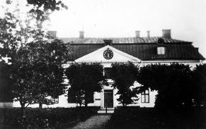 | Somliga går till eftervärlden genom skapandet av stor dikt eller stora konstverk. Andra reser byggnader som monument över sin levnad, monument som inte alltid respekteras av kommande generationer. Bröderna Apiarie satsade också på byggenskap. I en optimistisk konjunkturvåg uppfördes den herrgårdsliknande huvudbyggnaden på Barnängen som vi ser idag. Den välaktade byggmästaren Elias Kessleranlitades för utformningen. Men när bygget kom igång var den ekonomiska situationen inte längre så ljus ochunder byggåren 1767 till 1769 användes delvis avskedad personal från textilfabriken som byggarbetare.Holger Rosman gör i "Textilfabrikerna vid Barnängen" antagandet att husbygget fungerade som en sortsnödhjälpsarbete. Som sådant kan det ses som utslag av humant tänkande eller, om det var grovt underbetalt,som ett cyniskt utnyttjande av nödlidande människor i trångmål. Rosman konstaterar också att Barnängenslyckligaste tid sammanfaller med Gustav III:s glansdagar. När kungens stjärna dalar sjunker också Barnängens. |
| Av de bägge bröderna Apiarie var Carl Gustaf den drivande kraften bakom det mesta av nybyggena ochden trädgårdsanläggning i engelsk stil, innefattande orangeri med exotiska växter, som anlades på Barrängen.Arealen utvidgades också, bland annat genom inköp från Tottieska malmgårdens ägor. Det var mark som tillstor del utnyttjades för tobaksodling. Apiaries barnängsfastighet omfattade 1788 omkring 24 tunnland och vardärmed större än hela det gamla hospitalägda området på 1600-talet.År 1782 lämnade brodern Hans alltsammans liksom den Leijonanckerska delen vid Nytorget,"Malongen," till Carl Gustaf. Gustav III:s olyckliga ryska krig 1788-1790 tvingade Barnängen att ställa om produktionen, ensidigt inriktad pådet militära, varvid civila order gick förlorade till andra fabriker. | 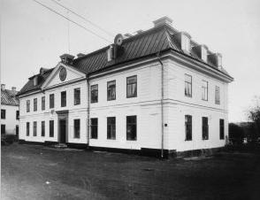 |
Malongen, som tidigare utrymts, kom efterkriget att nyttjas som sjukstuga med fabrikens anställda som sjukvaktare bland andra. Många av dem smittades avde intagna och dog till anhörigas förtvivlan och företagets förfång. Till de eländen som drabbade Carl GustafApiarie hörde också den eldsvåda som 1792 drabbade Barnängsfabriken och vars följdkostnader han personligenfick klara av. Uniformsutrustningen till borgerskapets mannar, som Barnängen svarat för, fick han därvid betalaur egen kassa. Mörkret börjar falla över anläggningen vid Hammarbysjön.
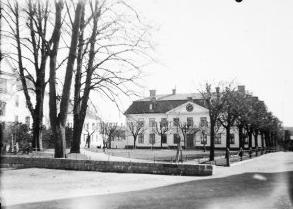 | Decenniet före det nya seklet gick produktionen stadigt ner och försäljning av textilfabriken blev aktuell, som följd av allmänt besvärliga konjunkturer. Antalet anställda sjönk på tio år från 553 till 195.Hans Apiarie gick ur tiden 1796 och i firman inträder nu som medarbetare en av brodern Carl Gustafs sönermed samma namn som farbrodern, Hans Reinhold Apiarie.
Tomten i Vintertullen Större, som 1758 köptes från bancokommissarie Robsahm, såldes för att hjälpa uppden ekonomiska situationen. Slutresultatet av alla transaktioner för att hålla firman vid liv blev att Carl Gustaf Apiaries son Gabriel, i kompanjonskap med företagets bokhållare August Byström, 1802 fick överta rörelsen. |
Under namn av Apiarie & Byström fortsatte tillverkningen ännu en tid. Men 1805 gick Barnängens ochLeijonanckerska ägorna under klubban. Det var i oktober och samma år som franska flottan besegrades av engelsmännen i slaget vid Trafalgar och amiral Nelson dog som nationalhjälte.Vid Hammarbysjön stod slaget om Barnängens existens som textilfabrik. Några hjältar uppträdde knappast på scenen. En fordringsägare, stadsmajoren Johan Peter Gladberg, kunde med sitt bud på 25 000riksdaler överta anläggningarna.
| Från 1806 framlevde Carl Gustaf Apiarie sina sista triumflösa levnadsår, bedrövad över sitt öde, väntande på döden i en tvårumsstuga på landet tillsammans med sin maka, som överlevde honom med sju år.Tillvarons spel med oss människor speglar i Apiaries levnadssaga ett mönster som ofta upprepats ochsärskilt framträdde efter industrialismens genombrott under senare 1800-talet. Då gavs många exempel påföretags och företagsledares uppgång och fall. Kanske ännu mera markerade och med större följdverkningarpå landsbygden än i Stockholm. Vad Barnängen anbelangar såldes anläggningarna 1822 till sidenkramhandlaren Carl Fredrik Medberg.Leijonanckerska fastigheten hamnade hos fabrikören Carl Anders Hornberg.Nu dröjde det inte länge förrän fabriken lades ner efter att ha existerat i drygt 130 år. Vi är då framme vid1826. Några år därefter skulle ett nytt skede inledas i Barnängens historia | 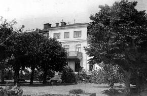 |
En för den andliga odlingen värdefull roll spelade Barnängen under den tid som Hillska skolan var inrymd ilokalerna från 1830 till 1846. År 1828 utkom på svenska, översatt från engelska, en redogörelse för undervisningsprinciperna iGoss-skolan i Hazelwood. Ur denna kunde följande utkristalliseras: "Till lärd man kan man bildas på flera olikasätt, det ena bättre, det andra sämre, men det ges ej mer än en uppfostran till medborgare: det är den som lärerdet uppväxande slägtet att låta begreppen om lag, rättvisa och menniskovärde ej blott gömmas i minnet ochljuda i öra, utan verka i viljan och lefva i handling:" Inspirerat av den engelska förebilden grundades"Sällskapet för bildandet af en uppfostringsskola efter Hillska methoden".
Under ledning av artillerilöjtnanten Fabian Wrede gjordes nödvändiga reparationer och ombyggnader avtextilfabrikens lokaler till skolbruk för drygt 22 000 Rdr b:o. Skolans intendent fick bostad i huvudbyggnadensövervåning där också ett sällskapsrum ordnades för elever och lärare.
Organisatoriskt var skolan uppdelad i en högre och en elementär avdelning men också med enförberedande klass. Språkundervisningen började med svenska i första, franska i andra (trots att en lärareansåg språket "onaturligt"!), tyska i tredje och engelska eller latin i fjärde klassen. I femman var alternativenengelska eller grekiska. Det senare hängde samman med att de studerande på den tiden ofta var inriktade påteologiska studier. Ritning, sång, gymnastik och fäktning hörde till skolans ämnen. För särskildmusikundervisning fordrades extra avgift. Läsåret sträckte sig över 40 veckor om 45 timmar per vecka.
En del elever bodde kvar i skolan även under ferierna, då det också gavs begränsad undervisning. Skoldisciplinenupprätthölls bland annat genom en särskild domstol, sammansatt av utvalda elever och lärare. De sammanträffadeen kväll i veckan och utmätte straff åt försumliga elever. Lärare slapp undan. Anmärkningar graderades i"minus-points" med böter ur elevens markerkassa. Ett särskilt penningsystem med marker hölls inom skolansrevir. Förfarandet med tillrättavisning genom anmärkningsbok, dock utan inblandning av pengar, men med"pinnar" var före andra världskriget allmänt i svenska läroverk.
Hillska skolans bestraffningssystem och regler ändrades emellertid mot slutet av skolans existens.Tidigare förbud mot aga upphävdes mer eller mindre och man återgick till mera vedertagnauppfostringsmetoder. Rektor och skolråd agerade som straffutmätare, precis som i vanliga skolor.Överhuvudtaget följdes det ursprungliga Hillska mönstret blott till en del. I huvudbyggnaden träffadeslärare och elever, där man läste, lekte och spelade musik på fritiden. Den fysiska aktiviteten gynnades av detangenäma, fria läget vid Hammarbysjön. Sommartid var det simning och vintertid skridskoåkning som gavhälsans friska rosor på elevernas kinder. Under vintern undervisades också i dans utan att någon behövdeblekna för den skull.
Dagordningen under terminen följde en fast rutin. Klockan 6.00 purrades eleverna. 7.30 åts morgonvard,klockan 11.00 frukost och klockan 17.00 middag med samma mat och vid samma bord som lärare, intendentoch övrig personal. Efter nyordning år 1835 ändrades måltiderna till frukost klockan 8.30 och middagklockan 13.00, mera i överensstämmelse med gängse bruk i elevernas hem.
Sovrummen var utrustade med varsin kommod för de boende. Kommod med handfat, handkanna ochunderskåp med nattkärl hörde till hemmens, hotellens och pensionatens sovrumsstandard i det gamla Sverige. Enoch annan kommod lär nog på sina håll fortfarande göra tjänst.
Elevernas ordning granskades ofta. Två gånger i veckan hölls "allmän kamning" och varje lördag "allmäntvagning". Varje onsdag och söndag skulle eleven påtaga ren dagskjorta, näsduk och strumpor. Avståndet mellanföreskrift och verklighet blev efter några år med disciplinproblem för stort och ledde också till bekymmer medekonomin. Den förste intendenten, Jonas Reuter, avskedades för den skull. Hans efterträdare, rektor E GBjörling, lämnade år 1840 skolan i protest mot förhållandena.
Från början drygt nittio elever reducerades efter sjätte året till endast fyrtiofem. Till skolans direktör sattesnu fabrikören Edvard Hale-Lewin och år 1837 var man åter uppe i ett högre elevantal, som med bibehållenlärarkader ledde till att arbetsdagarna för undervisarna kunde dra ut från klockan fyra på morgonen tillklockan nio på kvällen. Över etthundra elever noteras från 1830-talets senare år. Efter en inspektion år 1836gav psalmdiktaren,biskopen Johan Olof Wallin, en mycket ljus bild av institutionen. Det talas om det sunda, fria läget och deljusa, glada och smakfullt inrättade rummen. Det gällde läsrum, lekrum, matsal, sovrum och sjukrum. Överalltrådde ordning och snygghet. Sjukvakterska och läkare fanns alltid till hands. Man anar de hektiskaförberedelserna inför inspektorns ankomst.
Eleverna levde inte alltid efter reglementet. Några försigkomna gossar i de högre klasserna tog sig blandannat före att tillverka och förtära punsch inom skolans område, vilket naturligtvis bestraffades.Vårterminen detta år uppträdde en revoltunge inom elevskaran som protest mot att en ny lärare förbjöd dematt sjunga Bellmans Visor. Läraren vann och nationalskalden avhystes från repertoaren, förmodligen för sinfrispråkighets skull. Vi befinner oss nu i upptakten till den viktorianska eran med dess stränga moral.
Ett disciplinproblem var att skolans rikemansbarn kände sig socialt likställda med lärarna och stundombrast i respekt, medvetna om sin och föräldrarnas status. Bland annat slogs man om sällskapsrummenstidningar, representerade av Hiertas liberala Aftonbladet, det konservativa Svenska Biet, Dagligt Allehanda,Posttidningen, Minerva och Freja. Lärarna pockade på förtursrätt till tidningarna och betraktade därtillAftonbladets liberala hållning med motvilja. "Den olycksaliga idén om frihet och jemnlikhet, en kräfta förbåde stat och skola", konstaterade en av skolrådets medlemmar. I de äldre elevernas uppsatser spegladesintryck av Aftonbladets frihetsdrömmar och demokratiska idéer. Läsningen ansågs av några lärare somskadlig för skolgossar.
Många högre militärer, yrkesmän med växlande boplats, kunde i Hillska internatet binda sina studerandeungdomar vid en fast skolgång. De flesta eleverna kom annars från välbärgade stockholmsfamiljer. Skolansmatrikel upptar sålunda bland andra namn Carl Schwieler, som var son till disponent C A H Schwieler vid TantoSockerbruk. En annan studerande, Carl Edvard Casparsson, skulle senare överta sin faders sidenfabrik i GamlaStan, Casparsson & Schmidt. Eleverna Bolivar och Edmund Owen var söner till den engelskfödde konstruktörenoch ångbåtspionjären Samuel Owen. Namnet Carl Axel Odelberg har anknytning till Enskede gård. Fadern varden kände föregångsmanren inom svenskt jordbruk, godsägare Axel Odelberg.
Andra pojkar hörde hemma på lantgods ochbruksherrgårdar ute i landet, med ibland långa avstånd till läroanstalter. Ända från ryska Finland sändesungdomar till Hillska skolan för att få sin utbildning. Oscar Wallenius hette en elev från vårt östragrannland. Hans studiegång avbröts tvärt år 1836, under hans andra skolår. Ett tragiskt missöde medskolans salutkanon ändade den 16-årige pojkens liv. En bild av hälsoförhållandena i huvudstaden ett parår före denna händelse ger upplysningen om att en av de studerande, stadsnotarie Melins son Ludvig,blivit offer för den svåra koleraepidemin år 1834.
Det var adeln och familjer med status och pengar som satte sina söner i läroanstalten vid Hammarbysjö. Ingen elev behövde starta sitt verksamhetsliv med två tomma händer. För de flesta av dem gick detockså väl i framtiden, av deras senare titlar att döma, allt från generallöjtnant, häradshövding, statsråd,kammarherre, bankdirektör till fabriksdirektör och grosshandlare. Några blev professorer. Som lite uddafinner vi en organist. En unik placering fick George Netherwood, som blev tjänsteman på S:t Barthelemy,kolonin i Västindien, som Sverige sålde till Frankrike år 1878. Den omsider mest uppmärksammade avHillska skolans före detta elever är konstnären och professorn vid konstakademien, Johan FredrikHöckert, berömd för bland annat monumentalmålningen "Slottsbranden".Några kyrkans män blev det inte av de Hillska eleverna, trots undervisningen i grekiska!
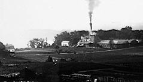  Utsikt över kv Malmen och Apelsinen mot sydost från Bondegatan 69 (bakom nuv Sofiaskolan). Bomullsspinneriet, kv Citronen. 1895 Utsikt över kv Malmen och Apelsinen mot sydost från Bondegatan 69 (bakom nuv Sofiaskolan). Bomullsspinneriet, kv Citronen. 1895 |
När Hillska skolan lades ned 1846 omfattade Barnängens fastighet tjugo tunnland och värderades till 86000 riksdaler banco. Men mångfrestaren, tidningsmannen, stearinljusfabrikanten m m Lars Johan Hierta köpte alltsammans för blott 54 000 riksdaler banco. Nu ställdes lokalerna om till textilindustri igen. Menden här gången gällde det sidenfabrikation. Industrialismens erövring av Stockholm mot 1800-talets mitt bröt sönder den gamla handels- ochhantverksstadens form. Många strandområden togs i anspråk för fabriksbyggen. Fler och flerhögtsträvande skorstenar växte upp för att i funktion bolma sotsvarta stoftmoln som smutsade stadens tak,väggar och fönster. |
| En del stora företag byggde också bostäder åt sina anställda. Pengar och krafter ödades emellertidhuvudsakligen på fabriksbyggen, där byggnadsarbetare hade fullt upp att göra. Tillströmningen av folk utifråntill Stockholm gjorde det lätt för företagen att rekrytera billig arbeskraft, till en början skyddslös motarbetsgivarnas krav och godtycke. Här kom de allt flera fackföreningarna mot 1800-talets slut att få betydelsesom stöd för de anställda. På landsbygden började redan under 1830-talet förbättringar inom hälsovården, inte minst genom utbreddvaccinering av nyfödda, att ge befolkningsöverskott. Gårdarna kunde inte längre suga upp all arbetskraft.Därtill kom att effektiva jordbruksmaskiner reducerade | 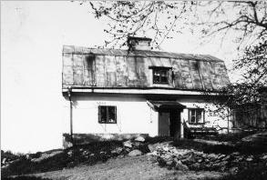 Stugan som syns längst till vänster på bilden ovan, byggd på 1730-talet |
Sidenfabriken på Bamängen startade i stor stil 1849. Hierta importerade mekaniska vävstolar frånEngland och installerade ångmaskiner. Därmed markerades den nya tidens intåg i Barnängens historia.Mekaniseringen hade bara börjat i Stockholm, men skulle under de närmaste åren komma att spridaslavinartat. Silkesschaletter var på Hiertas Barnängstid det stora slagnumret för stadens sidenväverier ochBarrängen låg inte efter vad det gällde produktion.
Hierta tog corps-de-logiet vid Barnängen till sin privatbostad och flyttade 1849 från den elegantabostaden i hyreshuset Brunkebergs hotell, dit han dock återvände tio år senare. Hovingska malmgården användes från 1842 till 1848 blott som sommarställe. Att familjen Hierta1859 flyttade åter till innerstaden berodde på att man tyckte det var för långt till affärer och när man skullebesöka goda vänner. Ännu skulle det dröja mer än ett halvsekel innan den nya tidens färdmedel radikaltminskade avstånden i tid mellan skilda platser i staden.
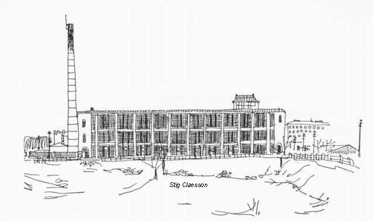
År 1867 upphörde sidentillverkningen på Barnängen. Lokalerna var till en del redan uthyrda till smärre fabriker.Man sydde handskar, gjorde vaxdukar och tillverkade ättika - en produktion som skulle bli kvar i den östraflygeln långt fram i vår tid. Hierta lyckades omsider sälja en stor del av Barnängen till det 1869 bildade företaget Stockholms Bomullsspinneri & Väfveri AB, som året därpåköpte till ytterligare mark. Hierta var själv intressent i denna firma och var dess styrelseordförande till sindöd.
År 1868 gjordes en transaktion med namnet Barnängen, när ägaren till Tottieska malmgårdenJohan Wilhelm Holmström och hans kompanjon Severin Dahlberg startade en kemisk-teknisk fabrik förframställning av tvål, såpa och liknande. Den döptes till Barnängens Tekniska Fabrik och fick därmed ettfirmanamn som än i dag lyser från företagets produkter. Bolaget har uppgått i Kema Nobel AB.